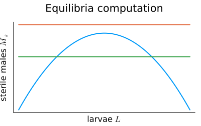
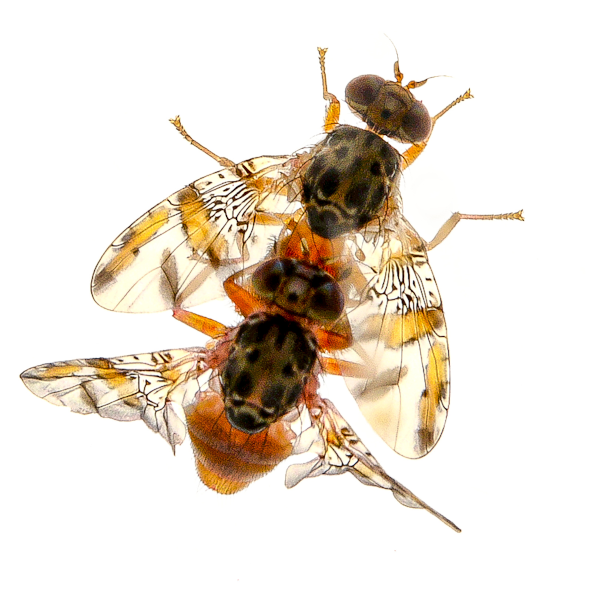
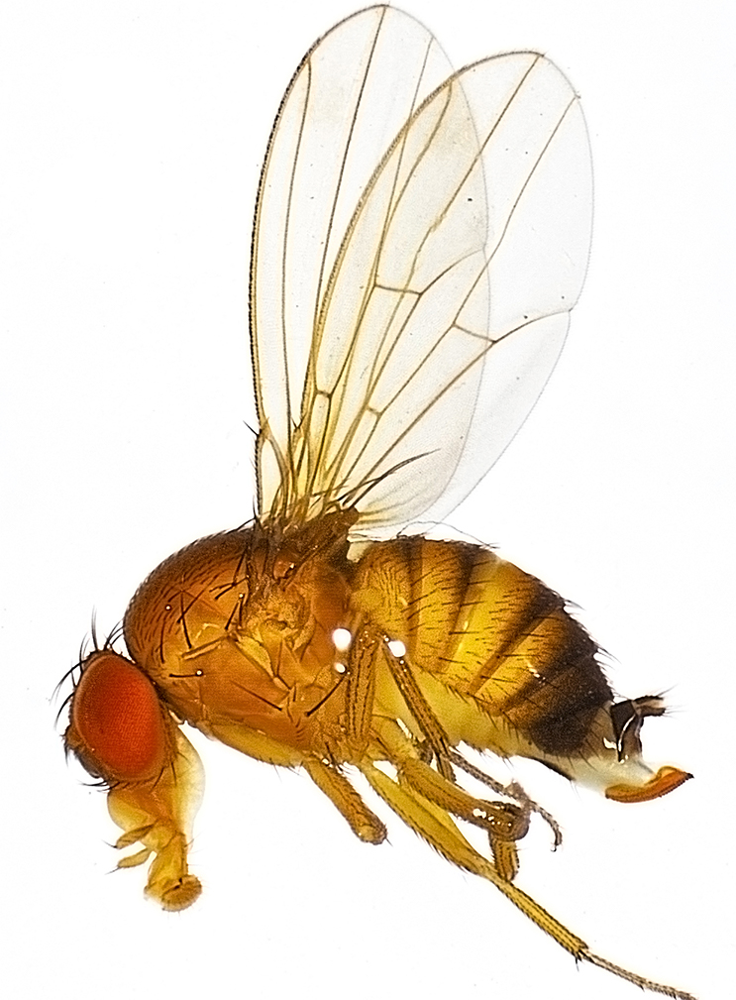
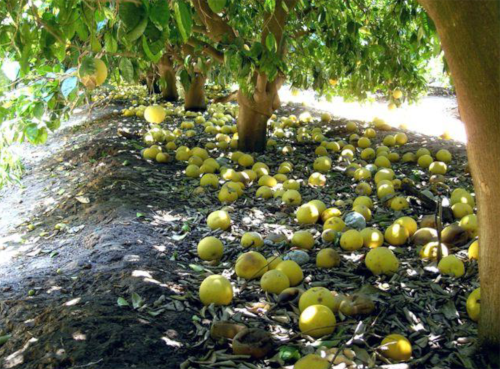
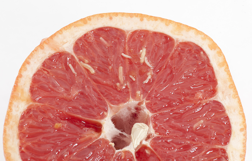
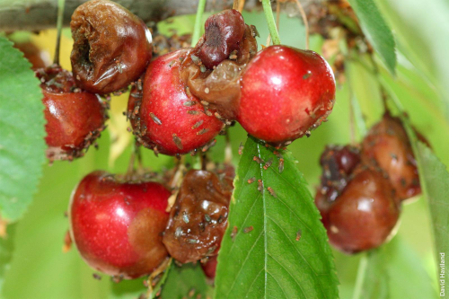
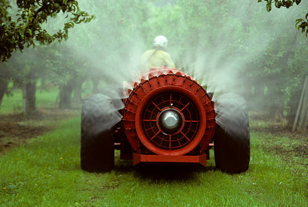
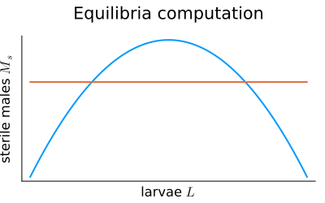
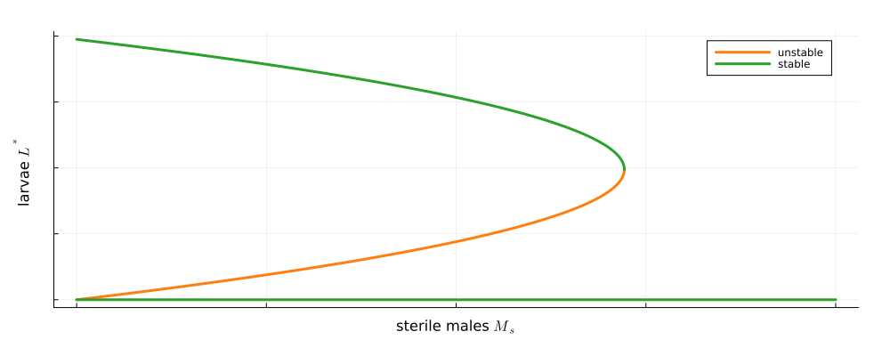

A sex- and stage-structured model
for pest control using the sterile insect technique
C. Kounoudji, S. Touzeau1,2, F. Grognard2, L. van Oudenhove1, L. Mailleret1,2*
1: M2P2, ISA (INRAE, CNRS, Univ. Côte d’Azur)
2: MACBES (Inria, INRAE, CNRS Univ. Côte d’Azur)
 

Fruit flies
- widespread polyphagous dipteran insects that lay their eggs in fruits
- Ceratitis capitata : citrus, stone fruits…
- Drosophila suzukii : berries, cherries…
- after hatching, maggots develop inside fruits, entailing massive damage
- make them unfit for consumption
- may cause early fruit drop
- create entry points for diseases
 

Fruit flies control
- control of fruit flies has long relied on chemicals
- sustainability and health issues
- development of resistant flies
- more stringent state regulations (EU)


- alternative eco-friendly control means include
- crop sanitation, mass trapping
- biological control
- sterile insect technique (developed worldwide for C. capitata, in R&D for D. suzukii)
Sterile Insect Technique (SIT)
- flood agricultural plots with factory produced sterilized males
- prevent matings between wild male and wild females
SIT is like a football game with so many people on the ground
you simply cannot find your teammates 1
Outline
- model SIT in an agricultural context relevant to fruit flies
- access to reliable estimates of crop damage
- analyze influence of sterile male introductions on model dynamics and damage levels
- study if and how sterile male pattern of introduction can be optimized
Fruit flies life cycle
Model diagram
- 4 stages: eggs/larvae \(L\), unmated females \(V\), males \(M\), mated females \(F\) 1
Mating model
- frequency dependent mating probability 1
- # males \(M\) abundant
females \(V\) mated at rate \(v_F\) - # males \(M\) limiting
mating proba. \(\frac{\gamma M}{V}\), \(V\) mating rate \(\frac{\gamma M}{V} v_F\)
- # males \(M\) abundant
- overall mating rate per unmated females \(V\)
\[ v_F \min\left(\frac{\gamma M}{V}, 1\right) \]
Population dynamics model
\[\small \left\{\begin{array}{l} \dot L = r \left(1-\frac{L}{K}\right)F - v_L L -\mu_L L\\ \dot M = p v_L L - \mu_M M\\ \dot V = (1-p)v_L L - v_F \min\left(\frac{\gamma M}{V}, 1\right) V -\mu_F V \\ \dot F = v_F \min\left(\frac{\gamma M}{V},1\right)V - \mu_F F \end{array}\right. \]
- in an agricultural context, the insect pest settles in crops at high densities s.t. \[\scriptsize \eta_0 = \frac {r\,(1-p) v_L v_F}{\mu_F (\mu_F + v_F)(\mu_L + v_L)} > 1 \]
- in that case, the positive equilibrium of the saturated submodel is GAS for the full model (Anguelov et alii, 2017)
- thus the \(\min(.)\) necessarily saturates to 1 after some transient times
Reduced model
- in what follows, we therefore concentrate on the simpler form
\[ \left\{\begin{array}{l} \dot L = r \left(1-\frac{L}{K}\right)F - v_L L -\mu_L L\\ \dot M = p v_L L - \mu_M M\\ \dot V = (1-p)v_L L - v_F V -\mu_F V\\ \dot F = v_F V - \mu_F F \end{array}\right. \]
- assuming that the basic reproduction number
\[ \eta_0 = \frac {r\,(1-p) v_L v_F}{\mu_F (\mu_F + v_F)(\mu_L + v_L)} > 1 \]
Model diagram (with sterile males)
- 5th stage: sterile males \(M_s\) (= constant for now)
\(M_S\) divert a part of unmated females \(V\) to mated-with-sterile females
Model with sterile males
- only a proportion \(\frac{M}{M+M_s}\) of matings yield egg-laying females
\[ \left\{\begin{array}{l} \dot L = r\left(1-\frac{L}{K}\right)F - v_L L -\mu_L L\\ \dot M = p v_L L - \mu_M M\\ \dot V = (1-p)v_L L - v_F V -\mu_F V\\ \dot F = v_F \frac{M}{M+M_S} V - \mu_F F \end{array}\right. \]
Analysis: equilibria
- equilibria are solutions of
\[\small \left\{\begin{array}{ll} F = \frac{v_L+\mu_L}{r\left(1-\frac{L}{K}\right)}L ~~~~~& \textsf{(i)}\\ M = \frac{pv_L}{\mu_M} L & \textsf{(ii)}\\ V = \frac{(1-p) v_L}{v_F+\mu_F} L & \textsf{(iii)}\\ F = \frac{v_F}{\mu_F}\frac{M}{M+M_s}V & \textsf{(iv)} \end{array}\right. \]
so that (0,0,0,0) is always an equilibrium
and, using (i), (ii) and (iii) in (iv), other equilibria must verify
\[\small \frac{v_L+\mu_L}{r\left(1-\frac{L}{K}\right)} = \frac{v_F}{\mu_F}\frac{\frac{pv_L}{\mu_M} L}{\frac{pv_L}{\mu_M} L+M_s}\frac{(1-p) v_L}{v_F+\mu_F} \]
Analysis: equilibria
- rearranging, other equilibria must verify
\[ 1=\eta_0\left(1-\frac{L}{K}\right)\frac{\frac{pv_L}{\mu_M} L}{\frac{pv_L}{\mu_M} L+M_s} \Leftrightarrow M_s = \frac{pv_L}{\mu_M} L\left(\eta_0 -1 -\frac{\eta_0}{K}L\right) \]
- RHS term is a concave parabola in \(L\), with roots: \(0\), and: \(K\left(1-\frac{1}{\eta_0}\right)>0\)
if \(M_s\) larger than max of parabola: no equilibrium other than \(0\)
if \(M_s\) smaller than max of parabola, there exists two positive equilibria with \(0 < L^*_1 < L^*_2 < K\)
Analysis: stability
- Jacobian matrix is 4D 😨
\[ J= \left(\begin{array}{cccc} -\frac{r}{K}F-\mu_L-v_L & 0 & 0 & r\left(1-\frac{L}{K}\right)\\ p v_L & -\mu_M & 0 & 0 \\ (1-p) v_L & 0 & -(v_F+\mu_F) & 0 \\ 0 & v_F\frac{M_s}{(M+M_s)^2}V & v_F\frac{M}{(M+M_s)} & -\mu_F \end{array} \right) \]
- but with non-negative off-diagonal elements at equilibria 👍
\[ J^*= \left(\begin{array}{cccc} \bullet & 0 & 0 & +\\ + & \bullet & 0 & 0 \\ + & 0 & \bullet & 0 \\ 0 & + & + & \bullet \end{array} \right) \]
Analysis: stability
- 0 equilibrium is always LAS, thanks to a nice block-triangular structure
\[{ J^*_0= \left(\begin{array}{ccc|c} -\left(\mu_L+v_L\right) & 0 & 0 & r\\ p v_L & -\mu_M & 0 & 0 \\ (1-p) v_L & 0 & -(v_F+\mu_F) & 0 \\ \hline 0 & 0 & 0 & -\mu_F \end{array} \right)} \]
- for positive equilibria built on \(L^*_1\) and \(L^*_2\)
- strong clues for fold bifurcation at \({\scriptsize M_s = \overline{M_{s}} = \frac{p v_L}{4\mu_M}\frac{(\eta_0-1)^2}{\eta_0}K}\)
- so that, given 0 is always LAS, \(E^*_1\) would be a saddle and \(E^*_2\) would be LAS

Analysis: stability of \(E^*_i\)
- use the special structure of the Jacobian: a Metzler matrix
\[ J=\left( \begin{array}{cc} \ddots & \geq 0 \\ \geq 0 & \ddots \end{array} \right) \]
- Bowong’s lemma 1
Let \(J\) be a Meztler matrix that can be decomposed into blocks as \[ J=\left(\begin{array}{cc} A & B\\ C & D \\ \end{array}\right) \] Then \(J\) is stable if and only if \(A\) and \(D-C A^{-1} B\) are stable Metzler matrices
Analysis: stability of \(E^*_i\)
- express \(J\) in function of \(L^*\)
\[\small J= \left(\begin{array}{cc|cc} \frac{-\eta_0(\mu_L+v_L)\frac{p v_L}{\mu_M} L^*}{\frac{p v_L}{\mu_M} L^*+M_s} & 0 & 0 & r\left(1-\frac{L^*}{K}\right)\\ p v_L & -\mu_M & 0 & 0 \\ \hline (1-p) v_L & 0 & -(\mu_F+v_F) & 0 \\ 0 & \frac{\eta_0 \mu_F(\mu_L+v_L)M_s L^*}{r (\frac{p v_L}{\mu_M} L^*+M_s)^2} & \frac{v_F\frac{p v_L}{\mu_M} L^*}{\frac{p v_L}{\mu_M} L^*+M_s} & -\mu_F \end{array} \right) \]
- so that
\[ A = \left( \begin{array}{cc} \frac{-\eta_0(\mu_L+v_L)\frac{p v_L}{\mu_M} L^*}{\frac{p v_L}{\mu_M} L^*+M_s} & 0\\ p v_L & -\mu_M \end{array}\right)~~\textsf{ is Metzler stable} \]
- and
\[\scriptsize B= \left( \begin{array}{cc} 0 & r\left(1-\frac{L^*}{K}\right)\\ 0 & 0 \end{array}\right),~ C = \left( \begin{array}{cc} (1-p) v_L & 0 \\ 0 & \frac{\eta_0 \mu_F(\mu_L+v_L)M_s L^*}{r (\frac{p v_L}{\mu_M} L^*+M_s)^2} \end{array}\right),~\textsf{and}~ D=\left( \begin{array}{cc} -(\mu_F+v_F) & 0\\ \frac{v_F\frac{p v_L}{\mu_M} L^*}{\frac{p v_L}{\mu_M} L^*+M_s} & -\mu_F \end{array}\right) \]
Stability of \(E^*_i\)
- further computations show \[\scriptsize D-CA^{-1} B = \left(\begin{array}{cc} -(\mu_F+v_F) & \frac{\mu_F(\mu_F+v_F)\left(1-\frac{L^*}{K}\right)\left(\frac{p v_L}{\mu_M}L^*+M_s\right)}{v_F \frac{p v_L}{\mu_M} L^*}\\ \frac{v_F\frac{p v_L}{\mu_M} L^*}{\frac{p v_L}{\mu_M} L^*+M_s} & \mu_F\left(\frac{M_S\left(1-\frac{L^*}{K}\right)}{\frac{p v_L}{\mu_M}L^*+M_s} - 1\right)\\ \end{array} \right){\normalsize~~\textsf{is Metzler}} \]
- and \[\small \begin{array}{ll} \det(D-CA^{-1} B) & = -\mu_F(\mu_F+v_F)\left[\left(1-\frac{L^*}{K}\right)\left(1+\frac{M_s}{\frac{p v_L}{\mu_M}L^*+M_s}\right)-1\right]\\ & = -\frac{\mu_F(\mu_F+v_F)}{\eta_0}\left(\eta_0 -1 -\frac{2 \eta_0 L^*}{K}\right) \end{array} \] given that \({\scriptsize M_s = \frac{p v_L}{\mu_M} L^* \left(\eta_0 - 1 -\frac{\eta_0 L^*}{K}\right)}\) at equilibrium \(E^*_i\)
Stability of \(E^*_i\)
- and this is it: the slope of the parabola at \(L^*_i\) is \[ \frac{d M_s}{dL} = \frac{p v_L}{\mu_M}\left(\eta_0 - 1 - \frac{2\eta_0 L^*_i}{K}\right) \] slope sign at \(L^*\) sets \(\det(D-CA^{-1}B)\) sign
at \(E^*_2\), \(\frac{d M_s}{dL}<0\) which implies: \(\det(D-CA^{-1}B)>0\) and \(\textrm{tr}(D-CA^{-1}B)<0\)1
from Bowong’s lemma, \(J(E^*_2)\) is thus stable and \(E^*_2\) is LAS
at \(E^*_1\), \(\frac{d M_s}{dL}>0\) which implies: \(\det(D-CA^{-1}B)<0\)
from Bowong’s lemma, \(E^*_1\) is unstable
Bifurcation diagram
- thanks to the cooperativity of the model
- when \(M_S > \overline{M_S}\), 0 equilibrium is GAS
- when \(M<\overline{M_S}\) trajectories converge to either 0 or \(E_2^*\)
\(\scriptsize M_s < \overline{M_S}\) : bi-stability

\(\scriptsize M_s > \overline{M_S}\) : 0 is GAS

Mated females invade
- 0 is still GAS, but…

Mated females invade
- but GAS is not always enough
Larvae vs. population size
- total population not a very good proxy for larvae population / crop damage

Model with pulsed \(M_s\) introductions
- same equations as before, but \(M_s\) is dynamic
\[ \left\{\begin{array}{ll} \dot M_s = -\mu_M M_s & \forall t\in(kT, (k+1)T)\\ M_s(kT^+) = M_s(kT) + \sigma T \end{array}\right. \]
- classical trick to compare different introduction regimes for a given introduction rate \(\sigma\) 1
Numerical experiments: pulses
- which introduction strategy works best: late introductions situation
Numerical experiments (pulses)
- which introduction strategy works best: early introduction situations
Conclusion
- sex- and stage- structured model of Anguelov et alii in a SIT context
- complete study
- Metzler matrices and cooperativity studies
- importance of larvae compartment
- dynamics are very different regarding the initial condition
- larvae density (damage) not well correlated with total population size
- strategy
- same results wrt \(T\) if larvae or mated females invade (but much larger release rates are required in that former case)
- same results with other proxy of damage as \(\int L(\tau)d\tau\)
- early introductions, and if not possible, introductions small and frequent
- use preventive releases
Do you wonder what happens if sterile males are not that sterile ?
Marine will show you more on wednesday morning
Thank you


Sex- and stage-structured SIT model - MPDEE 2023 Marseille